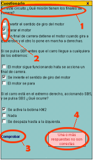
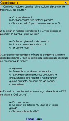
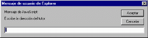
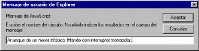

Ventana "Cuestionario"
| <<--Volver |
Muestra el conjunto de preguntas que permiten la evaluación
y autoevalución del alumno.
Consiste en un cuestionario interactivo que permite comprobar si las respuestas
son verdaderas.
La ventana "Cuestionario" está formada por:
1- Enunciado de la pregunta
2- Respuestas con casilla de verificación.
En todos los cuestionarios de CACEL, cada pregunta solamente tiene una respuesta.
3- Botón "Comprobar". Chequea si las respuestas elegidas
son ciertas.
4- Mensajes.
Un mensaje aparece indicando el resultado de la comprobación.

La ventana Cuestionario en el itinerario Evaluación no permite comprobar los resultados. Solamente es posible enviarlos vía E-mail a profesor tutor.

Cuando se hace Clic en "Enviar E-mail", aparece un primer cuadro de diálogo en el que se escribirá la dirección de correo electrónico del destinatario (profesor)

Una vez aceptado, aparece un segundo cuadro de diálogo en el que se escribe el nombre del circuito que se está evaluando.

El programa de correo electrónico se ejecutará automáticamente, con la dirección de correo y el asunto incluidos, siendo tarea del alumno indicar, en el cuerpo del correo, los resultados que crea correctos y su firma.
Una forma de dar la respuestas puede ser:
1-a
2-b
3-a
El número es la pregunta y la letra la respuesta.
| <<--Volver |